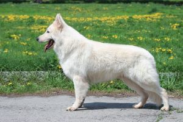

Черная немецкая овчарка
На сегодняшний день длинношерстная черная немецкая овчарка – самый красивый представитель своего вида. Этих благородных собак отличает верность и преданность своим хозяевам.
ПодробнееЗонарно-рыжая немецкая овчарка
Зонарный является изначальным окрасом всех первых пород собак и большинства диких псовых. Благодаря чередованию тёмных и светлых участков волоса, он обеспечивает в диких условиях необходимую маскировку
Подробнее

Белая немецкая овчарка
Это порода собак, которая отличается от своих сородичей белоснежной шубкой и мягким покладистым нравом. Белые немецкие овчарки — носители рецессивного гена, который и отвечает за их необычный цвет шерсти.
Подробнее
С ней нужно гулять минимум 2,5–3 часа, давая собаке смысловую нагрузку.
Да, немецкая овчарка при всей своей мужественности и отважности довольно дружелюбная порода.
Спокойно. Воспитанная немецкая овчарка проходит мимо встречной собаки с чувством собственного достоинства, словно той нет вовсе.